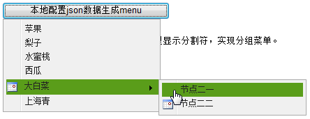

控件清单
Menu
FMenu适用于菜单方式链接导航或右键菜单
依赖组件
- 无
适用范围
右键菜单和功能列表
约束
- 菜单被关闭的条件：① 菜单/子菜单被点击；② document捕捉到click事件。
注意事项
- 如果点击某区域菜单无法被关闭，请检查是否是该区域的click事件冒泡被阻止。
使用示例
基于Jsp标签创建FCombo实例：
右键菜单：
绑定静态菜单数据：
属性
| 名称 | 类型 | 描述 | 默认值 |
|---|---|---|---|
| attach | Object |
要关联的组件的选择器，或者jquery对象 示例： $("#menu_1").FMenu("show", {attach:$("#buttonId")}) 或者
$("#menu_1").FMenu("show", {attach:"#buttonId"})
|
null |
| id | String |
标识(仅标签使用) 示例： 无 |
null |
| staticData | Array |
静态数据，用于初始化Menu对象 示例： var data1 = [{id:"item1", text:"Fruit", url:"www.baidu.com", children:[{id:"subItem1", text:"Apple"},{id:"subItem2", text:"Grape"}]},
{id:"item2", text:"Electrical Equipment", children:[{id:"subItem21", text:"T.V."},{id:"subItem22", text:"Air-conditioning"}]}];
$("#menu_1").FMenu("show", {staticData: data1})
|
null |
事件
| 名称 | 参数 | 描述 |
|---|---|---|
| beforeHide | function(options) |
隐藏之前事件，类型为function或者function的名字（字符串） 参数:var beforeHide = function(options) {
// TODO ... do something
};
$("#menu_1").FMenu("show", {
beforeHide : beforeHide // 或者 beforeHide:"beforeHide"
});
|
| beforeShow | function(options) |
显示之前事件，类型为function或者function的名字（字符串） 参数:var beforeShow = function(options) {
// TODO ... do something
};
$("#menu_1").FMenu("show", {
beforeShow : beforeShow // 或者beforeShow : "beforeShow"
});
|
| onClick | function(item, event) |
当点击选择menu的时候触发的事件，item包含当前menuItem的所有数据。类型为function或者function的名字（字符串）。 参数:$("#menu_1").FMenu("show", {
onClick:function(item, event){
location.href = item.url;
}
});
|
| onHide | function(options) |
隐藏之后事件，类型为function或者function的名字（字符串） 参数:var onHide = function(options) {
// TODO ... do something
};
$("#menu_1").FMenu("show", {
onHide : onHide // 或者 onHide:"onHide"
});
|
| onShow | function(options) |
显示之后事件，类型为function或者function的名字（字符串） 参数:var onShow = function(options) {
// TODO ... do something
};
$("#menu_1").FMenu("show", {
onShow : onShow // 或者 onShow:"onShow"
});
|
方法
| 名称 | 参数 | 描述 |
|---|---|---|
| disableItem | (itemId) |
将某个menuitem设置为disabled，设置之后menuitem将不会触发事件，如果有子菜单将不能打开子菜单，必须有menuItem。 参数://调用disableItem方法
$('#btn').click(function(){
$('#menu_simple').FMenu('disableItem','001');
});
|
| enableItem | (itemId) |
将某个menuitem设置为enable。 参数://调用enableItem方法
$('#btn').click(function(){
$('#menu_simple').FMenu('enableItem','001');
});
|
| hide | () |
隐藏menu，隐藏之后会清空menu当前的状态，并且会关闭所有的子菜单。 示例：//调用hide方法
$('#btn').click(function(){
$('#menuId').FMenu('hide');
});
|
| setStaticData | (staticData) |
设置Menu的静态数据内容，在下次显示的时候才用新的静态数据 参数://调用disableItem方法
var data1 = [...];
$('#btn').click(function(){
$('#menu_simple').FMenu('setStaticData',data1);
});
|
| show | (options) |
显示menu，menu不会自己显示，必须调用show方法才能显示 参数://通过点击button显示menu
$('#btn').click(function(){
$('#menu_simple').FMenu('show', {attach:"#attachbutton"});
});
|